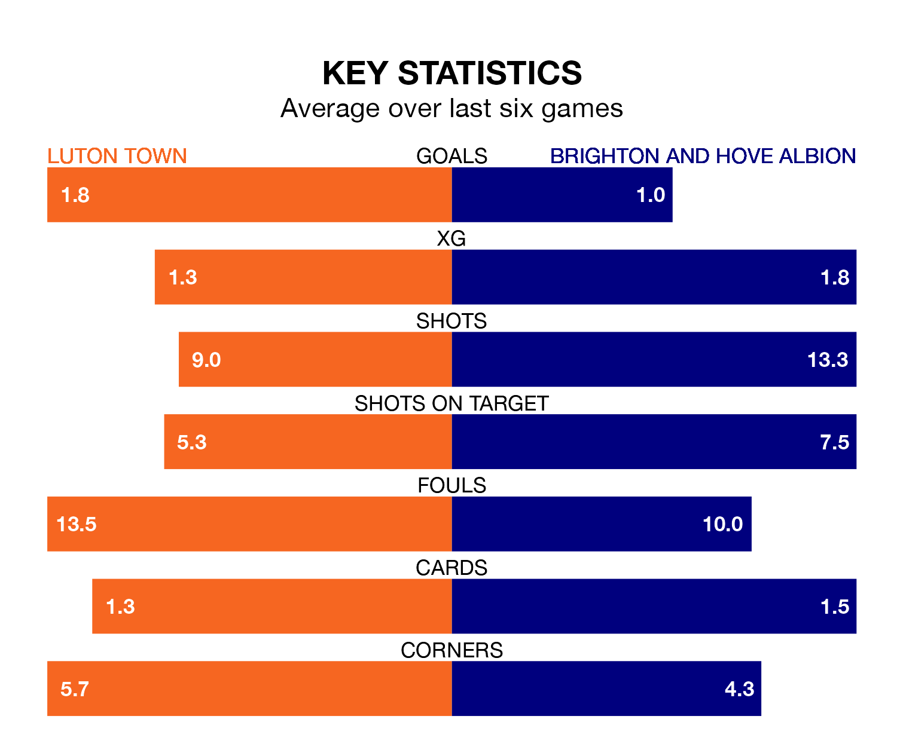

Brighton and Hove Albion are strong favourites to take all three points despite Luton Town's home advantage in Tuesday's late match at Kenilworth Road.
*Betting Company* are offering odds of 1.58 on Brighton sealing the win, with the visitors sitting seventh in the Premier League table.
Luton, who are 18th in the league and 16 points behind Brighton, are priced at 4.9 to win. A draw is set at 4.1.
With 24 goals in 20 games so far this season, Luton are scoring at below the league average rate with 1.2 goals per game. And they are conceding more than average, letting in 38 goals at a rate of 1.9 per game.
Brighton, meanwhile, are above average scorers, with 1.8 goals per game, compared to a league average of 1.6. They have conceded 1.6 goals per game.
Town are in mixed form in the Premier League, with two wins and a draw from their last six games.
With a win and four draws over that period, Albion's form is similar – they have both taken seven points from 18.
Luton's last match was on January 12, a 1-1 draw against Burnley, with Carlton Morris getting the goal for the Hatters.
Brighton drew 0-0 with Wolverhampton Wanderers last time out, on January 22.
Tuesday's match will be refereed by Robert Jones, who has taken charge of 13 Premier League games so far this season, issuing four red cards and booking 60 players. He has awarded three penalties.
The last Luton game Jones refereed was a 3-0 away loss to Chelsea on August 25. His last Brighton match was their 2-1 loss away at Manchester City on October 21.
Updated: 10:03 (UTC), 30/01/24